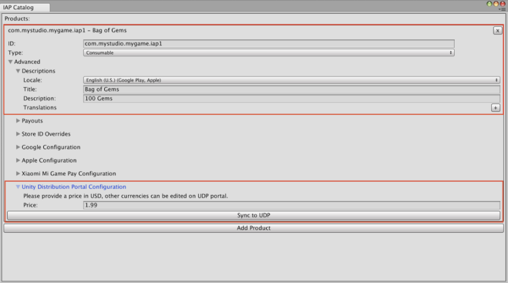

Using UDP with other services
| Important |
|---|
| The Unity Distribution Portal (UDP) is shutting down on February 17th, 2025. Access to the UDP Web console and services will be permanently deactivated on this date. To download your keystores and instructions on how to republish your games directly to app stores, visit the UDP overview page. If you have any questions about your account, submit a ticket with Unity Customer Support. |
Google Play games services in UDP builds
Overview
Implementing Google Play games services in your Android games lets you leverage Google’s service layer for features such as achievements and leaderboards. If your game implements Google Play game services, additional configuration is required to support the builds that UDP creates for different stores.
When your game invokes Google Play games services, Google Play games services checks that the following details match the information registered on the Google Play Console:
- The application’s package name
- The certificate the application was signed with
If they don’t match, the player can’t log into the application with Google Play games services.
For certain stores that you publish your game to via UDP, UDP adds a store-specific suffix to the package name. Additionally, if you don’t use your own private key to generate the certificate, UDP generates a certificate for each repacked build. These events would cause your certificate and/or package name to no longer match the information on the Google Play Console. This would prevent users from logging into the game with Google Play game services.
The following section explains how to resolve this issue.
Configuring Google Play games services for UDP builds
This section explains how to link your UDP versions to a Google Play application so that Google Play game services can work on all of them.
- In the Google Play Console, go to the target app.
- Go to Play Games Services > Setup and management > Configuration.
- If your Google Play game has Google Play games services implemented, your game will already be linked to a Google Play games services project. In this case:
- Select Use an existing Play Games Services project.
- Select your game project and select Use.
- Follow the steps in Link the UDP apps to your game service.
- If your Google Play game doesn’t have Google Play games services implemented:
- In the Play Games Services setup page, select Yes, my game already uses Google APIs or No, my game doesn’t use Google APIs.
- Follow the steps in Creating and linking a Google Play games services project.
- If your Google Play game has Google Play games services implemented, your game will already be linked to a Google Play games services project. In this case:
Creating and linking a Google Play games services project
This section explains how to create a Google Play games services project and link it to a new or existing cloud project.
If you selected Yes, my game already uses Google APIs in the Play Games Services setup page:
- Select a cloud project.
- Select Use to create a new Play Games Services project and link it to your existing cloud project.
If you selected No, my game doesn’t use Google APIs in the Play Games Services setup page:
- Enter a game name.
- Select Create to create a new Play Games Services project and link it to a new cloud project.
When you create a new Play Games Services project, the Add credential link is disabled.
- Select Configure OAuth consent screen.
- In the Play Games Services configuration screen, select Refresh.
The Add credential option is now enabled. - Select Add credential.
This opens the Add credential page. - In the Add credential page:
- Select Android as the Type.
- Set Enable anti-piracy to Off. This lets users access your game if they have installed it from a different app store than Google Play.
- In the Authorization section, select Create OAuth client. This opens a popup.
- Select Create OAuth Client ID and use the details from the popup to complete the form.
When you’ve completed the above steps, your Google Play game is linked to its Google Play games services. The next step is to link your UDP builds to the games services.
Linking UDP apps to your games services
When you have linked your app to Google Play games services you can link the other (UDP) apps to the games services.
- In the Google Play Console, select Play Games Services > Setup and management > Configuration.
- In the Play Games Services configuration page, select Add credential.
- In the Add credential page:
- Select Android.
- Set Enable anti-piracy to off. This lets users access your game if they have installed it from a different app store than Google Play.
- In the Authorization section, select Create OAuth client. This opens a popup.
- Select Create OAuth Client ID and use the details from the popup to complete the form.
- In the Create OAuth client ID form, enter the required details to create an entry for one of your UDP builds.
- In the Name field, name the build after the corresponding store, for example “Samsung version”.
- In the Package name field, specify the package name for the build registered with the corresponding store via the UDP console.
The store-specific package name is displayed in the UDP console:- Go to My Games > Publish tab.
- Select Advanced for the corresponding store.
The package name is displayed in the Basic Information section.
- In the certificate field, use the certificate used for the corresponding UDP store. UDP signs the app with the new certificate after the Repack operation.
The store-specific certificate is displayed in the UDP console:- Go to My Games > Publish tab.
- Select Advanced for the corresponding store.
The certificate is displayed in the Basic Information section.
Note: You can also download the APK Certificate and get the fingerprint information via the command:openssl x509 -in [downloaded-pem-filepath] -fingerprint -noout - Copy the SHA–1 from the UDP console into the certificate field.
- When you’ve completed the form, select Create and return to Google Play Console.
- Select Refresh OAuth clients.
- Select your new OAuth client.
- Select Save changes to save the credential.
- Repeat the above steps for each store-specific UDP build that you want to link to your Google Play application.
You can view the UDP builds you’ve linked to your Google Play application in the Google Cloud Platform > Google API & Services dashboard, under Credentials.
These steps enable Google Play games services to work successfully on all the UDP store versions that are linked that way, excluding Mi GetApps (whose SDK integrates an old version of Google Mobile Services, which creates conflicts).
Note: Any changes to Google’s systems could impact the solution described above. For more information on Google’s troubleshooting information, see the Google documentation.
Using Build Automation with UDP
You can use Build AutomationA continuous integration service for Unity projects that automates the process of creating builds on Unity’s servers. More info
See in Glossary to deploy your game to the UDP console in the following ways:
- Upload your APK to Build Automation, and deploy it to UDP from there
- Build your game with Build Automation, and deploy it to UDP from there
Pushing the build to the UDP console via Build Automation
This section explains how to use Build Automation to push your game to UDP.
In the Unity Editor, enable Build Automation in the Project SettingsA broad collection of settings which allow you to configure how Physics, Audio, Networking, Graphics, Input and many other areas of your project behave. More info
See in Glossary window.
Using Build Automation in the Editor to deploy your game to UDP
To deploy your game to UDP via the Build Automation feature in the Unity Editor, you need to upload your UDP build and push it to UDP.
- In the Build Automation tab of the Project Settings window, if you haven’t uploaded any build before, select Upload Build.
- In FILE:
- Select UPLOAD, and let it complete the upload process.
- In the Build Automation tab of the Project Settings window, locate the desired build from the build History timeline and select Push to Unity Distribution Portal.
- Verify that you want to push, and that the action completes.
- Verify that you want to push, and that the action completes.
Using the Unity Dashboard to deploy your game to UDP
To deploy your game to UDP via the Build Automation feature in the Unity Dashboard, you need to upload your UDP build to the Unity Dashboard and push it from there to UDP.
- In the Unity Developer Dashboard, navigate to your Project’s Build Automation > History.
- Select Upload, then select your APK file.
- In the Platform field, select Android.
- Select Upload.
- Select the More menu next to your build to expand the drop-down menu.
- Select Push to Unity Distribution Portal.
Building and deploying via Build Automation
If you use Unity Teams Advanced, you can generate builds automatically.
In the Build Automation tab of the Project Settings window:
- Select Manage Build Targets > Add new build target
- In the TARGET SETUP window, set the PLATFORM field to Android and enter a useful TARGET LABEL.
- Select Next: Save.
- Select Start Build Automation, then select the target build you just created.
Push your build to UDP directly via the Unity Build Automation Developer Dashboard (as shown above).
Service interoperability
UDP can tell other services used by your game which store was the game downloaded from.
This information can be used in many ways, by Unity services as well as by third-party or your own services.
For example, Unity Remote Config lets you tune your game settings based on rules that you define, such as which store the game was downloaded from.
This section explains how to let other services gain access to this information, and includes an example.
How does it work?
When your game first launches on a player’s device, UDP creates and drops the udp.json file in the game’s Persistent Data Path. This file contains the field udpStore, which shows which store the game was downloaded from. Retrieve that information to use it the way you intend to.
Note: This doesn’t add any new permission into your game manifest.
Locating udp.json
The file udp.json is saved in:
Application.PersistentDataPath + '/Unity' + /Application.CloudProjectID + /udp/udp.json
Where:
-
Application.PersistentDataPathis your game’s persistent data path -
Application.CloudProjectIDis your game’s Unity project ID
Here is an example of a path to the udp.json file:
path/storage/emulated/0/Android/data/com.mystudio.mygame/files/Unity/c83d2de2-de74-4b75-83fc-ade948bda064/udp/udp.json
Where:
-
Application.PersistentDataPath=path/storage/emulated/0/Android/data/com.mystudio.mygame -
Application.CloudProjectID=c83d2de2-de74-4b75-83fc-ade948bda064
Reading udp.json
The file udp.json contains the following information:
{"key":"UDP","udpStore":"StoreName","udpClientId":"value_of_udpClientId","CloudProjectId":"value_of_CloudProjectId"}
The field udpStore contains the value of the UDP store your game was downloaded from.
Here is an example of a udp.json file:
{"key":"UDP","udpStore":"Huawei","udpClientId":"icjaB7wmu_q7AOjrSLH8yw","cloudProjectId":"bc2be074-09f3-450f-8e98-a0f79c9746f7"}
In this example, the game was downloaded from the HUAWEI AppGallery.
Tip: use JSONUtility.FromJsonOverwrite to read the contents of the file as a text asset.
udpStore values
The table below lists the udpStore values you can expect for stores available on UDP.
These are case-sensitive.
| Store (channel name on UDP) | Value for udpStore |
|---|---|
| UDP Sandbox (for the generic UDP builds) | UdpSandbox |
| ONE store | OneStore |
| APPTUTTi | Apptutti |
| Mi GetApps (Xiaomi) | XiaomiStore |
| HUAWEI AppGallery | Huawei |
| QooApp Game Store | QooApp |
| Uptodown | Uptodown |
| SHAREit | ShareIt |
| JioGames | JioGames |
| Legion Store | Legion |
Using udpStore with Remote Config
Unity Remote Config lets you tune your game settings without deploying new versions of your application. When a player launches your game, Remote Config detects contextual attributes used as Rule conditions (based on Unity, the application, the user, or custom criteria that you define). The service then returns customized settings for each player according to the Rules that apply to them.
Use udpStore as an attribute in your Rule conditions, so you can determine game settings that depend on which UDP store the game was downloaded from.
To implement udpStore with Remote Config, follow these steps.
- Download and install the UDP package.
- Download and install the Unity RemoteA downloadable app designed to help with Android, iOS and tvOS development. The app connects with Unity while you are running your project in Play Mode from the Unity Editor. More info
See in Glossary Config package. See the Remote Config documentation. - Create an AppAttributes struct, which at least has a parameter, “udpStore”:
public struct AppAttributes { public string udpStore; } - In the game code, implement the Remote Config ConfigManager.FetchConfigs call.
- When calling FetchConfigs, create a new instance of the AppAttributes struct, read the UDP store data file from:
Application.PersistentDataPath + ‘/Unity’ + /Application.CloudProjectId + /udp/udp.json
Use JSONUtility.FromJsonOverwrite to read the contents of the file as a text asset.
{ string udpFilePath = System.IO.Path.Combine(Application.persistentDataPath, "Unity", Application.cloudProjectId, "udp", "udp.json"); string udpFileContents = System.IO.File.ReadAllText(udpFilePath); var appAttr = JsonUtility.FromJson<AppAttributes>(udpFileContents); Unity.RemoteConfig.ConfigManager.FetchCompleted += ConfigManager_FetchCompleted; Unity.RemoteConfig.ConfigManager.FetchConfigs(null, appAttr); } - Ensure the AppAttributes struct is used in ConfigManager.FetchConfigs.
- Open the Remote Config settings (Services > Remote Config > Configure), and create the parameters that you’d want to change based on the UDP store.
- When the parameters are set up, and instrumented in the game code, create a rule for each store in the Remote Config window.
- In each rule’s condition, put: app.udpStore == “[storeName]”
- See the values for udpStore

- See the values for udpStore
- To enable the setting, select the checkbox next to the name of the rule on the left panel in the Remote Config settings.
- Build the app to a device and ensure the rules are properly applied, and ship it.
Implementing IAP items for UDP with Unity IAP
If you want to implement UDP using Unity IAPAbbreviation of Unity In App Purchase
See in Glossary, first set up Unity IAP.
Note: If you choose to implement UDP with Unity IAP version 1.22.0–1.23.5 (instead of using the UDP package) then implement via Unity IAP only.
Unity IAP automatically handles the following:
- Initializing UDP
- Querying the store’s IAP product inventory
- Requesting to purchase a product
- Consuming the purchased item
However, your game must properly use Unity IAP’s similar functions (such as initialization and purchase) according to the Unity IAP Documentation.
When you’ve implemented your game’s in-app purchases with Unity IAP, take the following steps to set up UDP with Unity IAP.
Querying IAP inventory
With Unity IAP (code implementation)
Fetching IAP products defined in the Editor
When fetching the IAP products to pass to the queryInventory method, invoke ProductCatalog.LoadDefaultCatalog(). This returns the IAP products defined in the Editor’s IAP Catalog (Services > Unity IAP > IAP Catalog).
For instance:
var catalog = ProductCatalog.LoadDefaultCatalog();
foreach (var product in catalog.allValidProducts)
{
if (product.allStoreIDs.Count > 0)
{
var ids = new IDs();
foreach (var storeID in product.allStoreIDs)
{
ids.Add(storeID.id, storeID.store);
}
builder.AddProduct(product.id, product.type, ids);
}
else
{
builder.AddProduct(product.id, product.type);
}
}
Fetching IAP product information from the UDP console
If you plan to modify your game’s IAP Catalog on the UDP Console, prepare your game to fetch IAP product information from the UDP Console.
When fetching the IAP products to pass to the queryInventory method, invoke builder.AddProduct to retrieve specific IAP products defined from the UDP console:
builder.AddProduct(product.id, product.type, new IDs{})
To display the product price, formatted with currency, use productInfo.Value.Price.
Fetching the IAP Catalog from the UDP console
To retrieve all the IAP products defined on the UDP Console, don’t invoke any IAP product retrieval method. Your game will then fetch the entire IAP Catalog from the UDP Console.
Note: Uploading a CSV file of IAP products on the UDP Console entirely overwrites your IAP Catalog.
Filling in the IAP Catalog with the Unity IAP package
Add and configure your IAP Catalog all your in-app purchases for UDP.
Note: If you don’t use an IAP Catalog in your game client (for instance, you maintain your IAP items solely on your game server) you must still create your IAP Catalog on the UDP console.
- In the Unity Editor, select Services > Unity IAP > IAP Catalog.
- Select Add Product and enter the details for each IAP product.
- Add the price for the IAP item under Unity Distribution Portal Configuration. 
- To save your IAP product to the UDP console, select Sync to UDP. Do this for each IAP product you create.
To make sure the IAP Catalog is properly saved, check that the items you added are displayed in the UDP console.